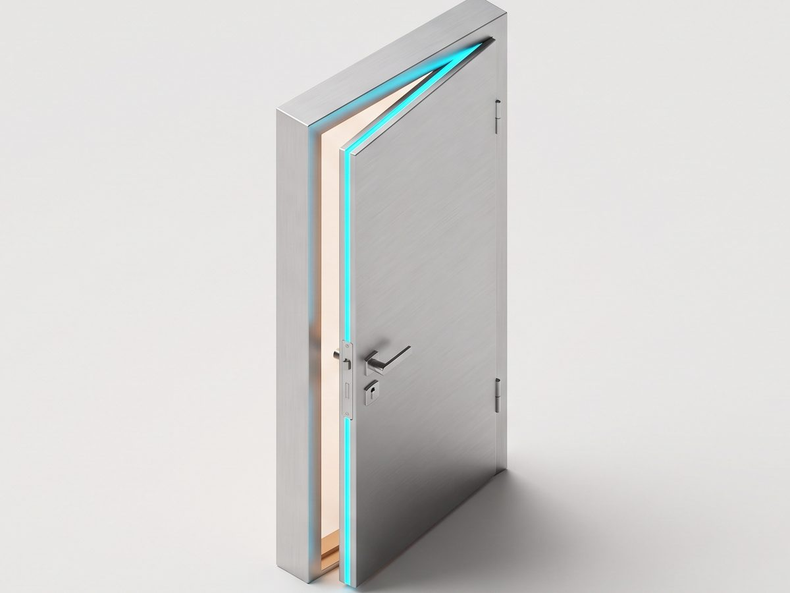
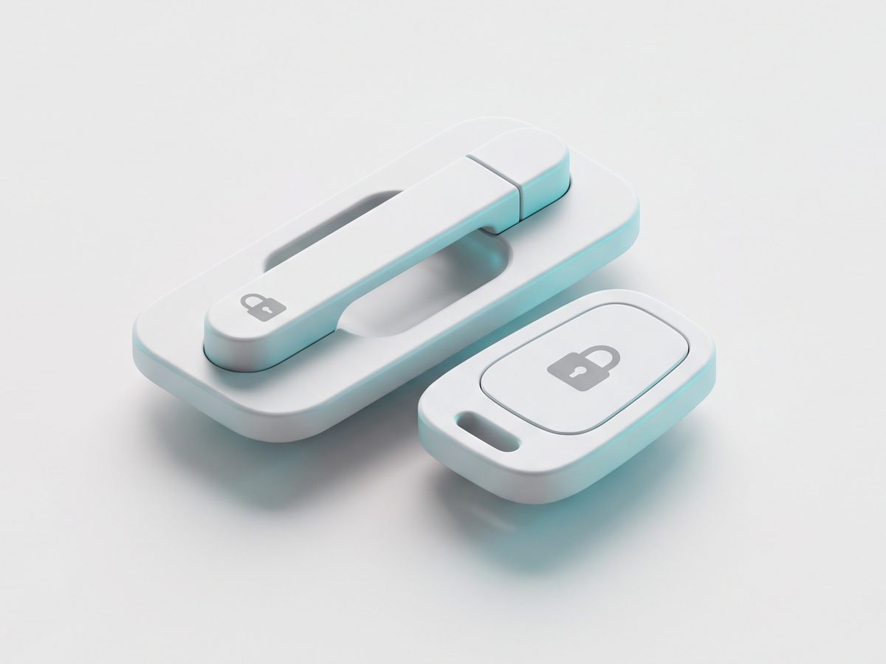
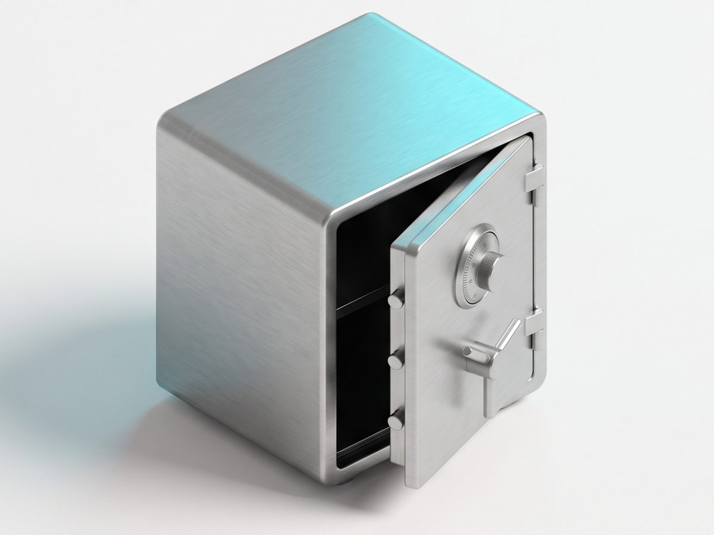
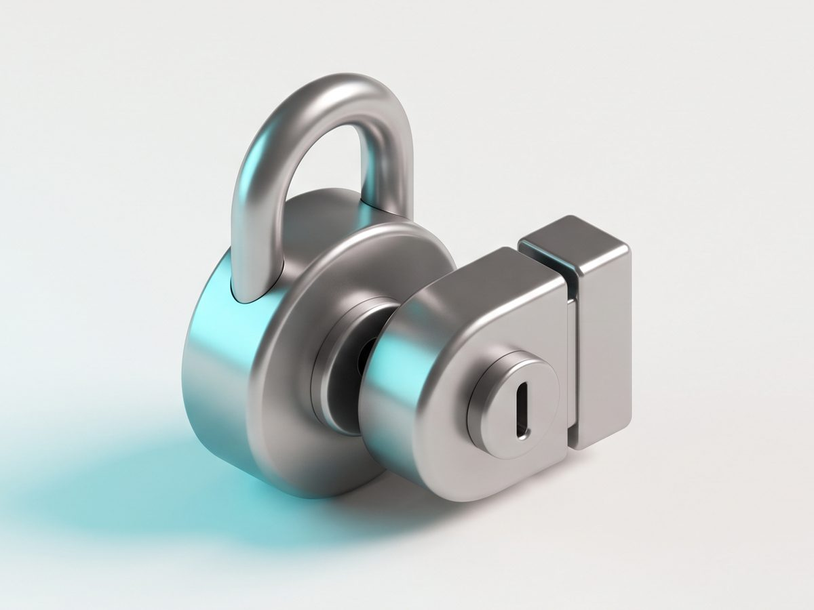

Круглосуточно. Без предоплаты — платите после того, как дверь открыта.
Потеряли ключи, замок заклинило, дверь захлопнулась — с этим сталкивается каждый, и всегда не вовремя. Наши мастера — коренные москвичи с профессиональным инструментом: аккуратно открываем механические, электронные, сейфовые и автомобильные замки, а если нужно — тут же меняем личинку или ставим новый замок. Цену называем по телефону до выезда, платите после результата.
Позвонить мастеру
Металлические, деревянные, межкомнатные. Guardian, DUF, цилиндровые и сувальдные замки.
от 1 000 ₽
Захлопнулась дверь, ключи внутри, сработала сигнализация. Салон, багажник, капот.
от 1 500 ₽
Забыли код, потерян ключ, заблокировался механизм. Вскрываем с сохранением содержимого.
от 2 100 ₽
Гаражные ворота, навесные замки, почтовые ящики, тумбочки и шкафы.
от 1 000 ₽Точную стоимость назовём по телефону до выезда — она не изменится на месте без вашего согласия. Выезд мастера по Москве бесплатный.
| Вскрытие межкомнатного замка | от 1 000 ₽ |
| Вскрытие замка почтового ящика | от 1 000 ₽ |
| Вскрытие замка тумбочки | от 1 200 ₽ |
| Вскрытие навесного замка | от 1 500 ₽ |
| Вскрытие балконной двери | от 1 500 ₽ |
| Вскрытие деревянной двери | от 1 750 ₽ |
| Вскрытие гаражного замка | от 2 000 ₽ |
| Вскрытие кодового замка | от 2 100 ₽ |
| Вскрытие железной двери | от 2 150 ₽ |
| Вскрытие квартирного замка | от 2 200 ₽ |
| Вскрытие замка DUF | от 2 200 ₽ |
| Вскрытие входной двери | от 2 300 ₽ |
| Вскрытие замка Guardian | от 2 500 ₽ |
| Вскрытие замка сейфа | от 2 500 ₽ |
Стоимость зависит от класса замка и наличия защиты (броненакладки, защита от высверливания). Любую доплату согласуем заранее.
Коротко рассказываете, что случилось: тип двери или замка и адрес. Сразу называем цену.
Направляем ближайшего специалиста. В среднем он у вас через 20 минут — в любое время суток.
Проверяем документы, аккуратно вскрываем замок, при необходимости меняем на месте. Оплата — после.
Перед вскрытием мастер попросит подтвердить право доступа. Если документы остались за дверью — покажете их сразу после открытия. Это защищает вас: никто чужой не попадёт в вашу квартиру с нашей помощью.
Мастера распределены по округам Москвы и Подмосковью, поэтому обычно приезжаем за 20–30 минут. Точное время назовём при звонке с учётом адреса и пробок.
В 99% случаев открываем без повреждений — воздействуем только на механизм секретности. Если замок изношен и без разрушения не обойтись, предупредим заранее и сразу заменим его на месте.
Цену называем по телефону до выезда. Изменение возможно только если на месте выяснится, что замок другого класса или стоит броненакладка — и только с вашего согласия.
Нет. Платите после того, как дверь открыта. Принимаем наличные и перевод на карту.
Это обычная ситуация. Мастер откроет дверь, и вы покажете документы сразу после этого. Если подтвердить право доступа не получится, мастер вызовет полицию — так мы защищаем владельцев.
Да. У мастера с собой личинки и замки популярных марок. Замена займёт 15–40 минут, повторно вызывать никого не нужно.
Круглосуточно · Без выходных · Москва и Московская область